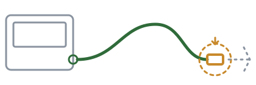
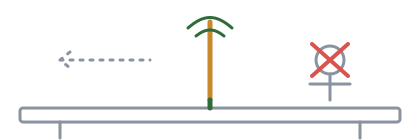

Pasos
- Conecta el NanoVNA por USB y pulsa Conectar.
- Calibra con el asistente de calibración (open, short, load) en el extremo del cable. Puedes hacerlo por tramos y completarlo otro día.
- Elige la banda objetivo, conecta la antena, pulsa Medir y aléjate durante la cuenta atrás.
- Te diré si debes alargar o cortar la antena y cuánto.
Cómo montar la medida (con dibujos)


Adaptadores: el SMA y el RP-SMA parecen iguales pero no encajan (en el RP-SMA el pin y el agujero están cambiados). El u.FL (IPEX) es diminuto y aguanta pocas conexiones: úsalo solo con un latiguillo hacia SMA.
- Conecta el NanoVNA por USB y calíbralo en el extremo del cable.
- Ajusta el rango, los puntos y el espaciado, y pulsa Medir.
- Explora la carta de Smith, la impedancia, la fase y el retardo con el cursor, y descarga CSV, Touchstone (.s1p) o el informe PDF.
Calibración
Medición
Qué hacer con la antena
Cómo va la antena en cada parte de la banda
Resumen
ROE (relación de onda estacionaria)
- Muy bien acoplada · ROE de 1 a 1,5 · se puede usar con normalidad
- Aceptable · de 1,5 a 2 · se puede usar con normalidad
- Mejorable · de 2 a 3 · transmitir poco y a potencia reducida
- Mal acoplada · más de 3 · no transmitir salvo emergencias
¿Qué significan estos términos?
- ROE (o SWR)
- Mide cuánta potencia vuelve al equipo en vez de salir por la antena. 1 es perfecto; con 2 se refleja el 11 %, con 3 el 25 % y con 5 el 44 %.
- Pérdida de retorno
- Lo mismo en decibelios: cuanto más alta, menos se refleja. Una ROE de 2 equivale a 9,5 dB.
- Resonancia
- La frecuencia en la que la antena mejor se adapta. Si no es la que usas, hay que alargarla o acortarla.
- Ancho de banda
- El margen de frecuencias en el que la ROE se mantiene en 2 o menos.
- Carta de Smith
- Un gráfico de la impedancia de la antena. Está en el modo Avanzado.
Cursor
Herramientas de radioaficionado
Calculadora de adaptación (red en L)
Con la impedancia medida a una frecuencia, calcula la red de dos componentes (valores E24) que la lleva a 50 Ω. Pon un ATU o los componentes en el extremo de la línea, junto a la antena.
Coaxial y stubs
Mide el tramo con el extremo lejano abierto o en corto (barrido general o de varias decenas de MHz, calibrado en el conector). Da el factor de velocidad, la pérdida y el largo de un stub de λ/4 o λ/2.
Trampa o circuito resonante (Q)
Acopla el circuito con un lazo o una sonda de un par de vueltas, lo más flojo que puedas (el pozo de la curva debe ser poco profundo), y barre alrededor de su resonancia. Da la frecuencia, el ancho a media potencia y la Q.
Quitar el cable (medir en la antena)
Si mides a través de un cable sin calibrar en su extremo, la ROE de la estación parece mejor que la de la antena porque el cable absorbe parte de lo reflejado. Pon aquí el cable y el programa llevará la medida a la antena. Se aplica a las medidas nuevas, y a los datos guardados (.s1p) también.
Carta de Smith
Impedancia
Fase de S11
VSWR
Retardo de grupo
Resonancias detectadas
Bandas
Comparar antenas
Guarda esta medida con un nombre (la antena de serie, la comprada, la casera…) y compárala con las demás del mismo objetivo.
")